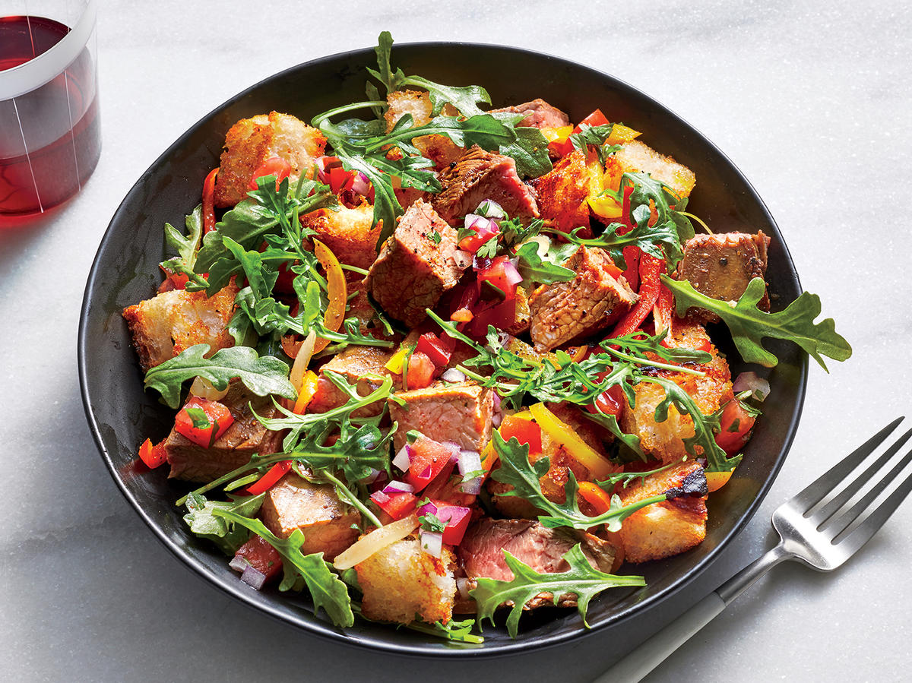

Lunch Recipes

Steak Fajita Salad
Tired of your basic toast? Try this superfood breakfast recipe! Simple yet delicious, this recipe will only take less than half an hour.


Ultimate Chicken Burrito
Feeling adventurous? Try making this chicken burrito filled with black beans, tomatoes, avocados with a kick of chilli. The best part of this meal is that it is made in under 30 minutes.